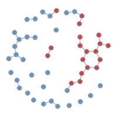
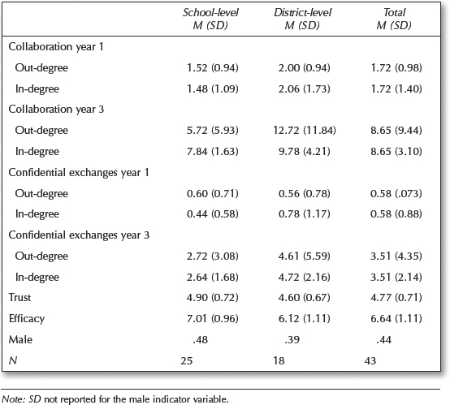
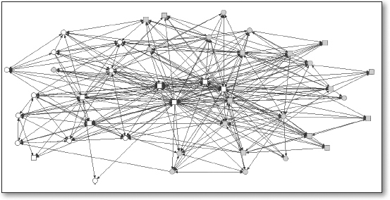

# YOUR CODE HEREBirds of a Feather Lead Together
ECI 589 SNA and Education: Unit 4 Case Study
1. PREPARE
For the Unit 4 Case Study: Birds of Feather Lead Together, we once again visit the work of Alan Daly and colleagues as we attempt to replicate some of the analyses described in Chapter 9: Network Data and Statistical Models from Social Network Analysis and Education (Carolan 2014). In this case study move beyond the visual and mathematical descriptions of networks explored so far to uncover generative processes, or mechanisms, that attempt to explain how school leaders select peers for collaboration or confidential exchanges.
More specifically, this case study will cover the following topics pertaining to each data-intensive workflow process:
Prepare: Prior to analysis, we’ll take a look at the context from which our data came, formulate some research questions, and get introduced the {statnet} R package for Exponential-family Random Graph Models, or ERGMs.
Wrangle: In section 2 we will learn how to work with matrices, how to dichotomize matrices, and how to convert matrices into more workable formats like our familiar edge-list.
Explore: In section 3, we once again use the {tidygraph} package and the companion {ggraph} package to calculate basic summary stats for our network; we will try to replicate and, ideally improve upon, the sociogram from our course text.
Model: We wrap up our analysis in Section 4 by introducing exponential random graph models used in Chapter 9 of @carolan2014, learn to check how well our model “fits our data” and examine diagnostics that might indicate issues with our model.
Communicate: Finally, we prepare our case study for sharing by rendering our Quarto file to a webpage and writing a brief reflection.
1a. Review the Research
In Social Network Analysis and Education: Theory, Methods & Applications Carolan (2014) makes the following distinctions between mathematical and statistical approaches to social network analysis:
Mathematical approaches focus on what a network of actors “looks like” by describing the network using sociograms and/or network measures such as reciprocity, centrality, and density. However, these approaches “tend to regard the measured relationships and their strengths as accurately reflecting the real, final, or equilibrium status of the network.”
Statistical approaches, or statistical inference, on the other hand, focuses on “assessing the reproducibility or likelihood of an observed pattern” with the goal of explaining and ultimately predicting network structures and outcomes.
For Unit 4, we move beyond previous “mathematical approaches” used so far and explore the use of ERGMs as a “statistical approach” to network analysis. Specifically, we will try to replicate the P* models used in Chapter 9 of Carolan (2014) in order to test hypotheses about individual and network characteristics that may explain who school leaders select for collaboration and confidential exchanges.
Research Questions
For this case study, we will be using school leadership data that were collected at two school districts over 3 consecutive years and used to answer the following research questions below:
- Is there a relationship between the frequency of collaboration between school leaders and how often they turn to each other to discuss issues of a confidential nature?
- Do school leaders prefer to collaborate with those with whom they have collaborated in the past, or is there some other reason?
- Does gender or some other individual attribute predict confidential exchanges between school leaders, or does some previous relation have a stronger effect?
- Does collaboration between leaders explain one’s level of trust in one’s administrative colleagues?
- Can we distinguish among different groups of school leaders based on how frequently they collaborate, and if so, are these groupings related to the level at which they work (school versus district)?
Of specific interest for our case study is research question 3 emphasized in bold text above, which asks whether individual attributes predict tie formation. For example, are males more likely to engage in exchange confidential exchanges with others of the same gender.
The tendency for individuals to be attracted to and interact with others who share similar characteristics is formally referred to as homophily or assortativity, but more commonly known by the “birds of a feather flock together” proverb.
Homophily has been well documented in education research across a variety of relation types including student friendships, teacher-pupil interactions, and membership in student cohorts [@mcpherson1987homophily]. Studies of homophily among student friendships, for example, date back to the 1920’s and provide strong evidence that students form ties based on socio-demographic similarities.
Data Collection
For each consecutive year, school district leaders were invited to complete a survey that collected individual:
Demographic information (e.g., gender, ethnicity, marital status, age, years of experiences);
Network relationships types (e.g., collaboration, confidential exchanges, energy, expertise, leaders approached for support, work-related issues, input, recognition, best practices, and innovation);
Frequency of interactions they have with those nominated individuals on a four-point frequency scale ranging from 1 (the least frequent) to 4 (1–2 times a week);
Leadership efficacy items were designed based on the Principal Efficacy Scale used in Daly and Finnigan (2011) and Tschannen-Moran and Gareis (2004). The efficacy scale includes 18 items rated on a 9-point Likert scale ranging from 1 (None at all) to 9 (A great deal);
Trust scale contains eight items rated on a 7-point Likert scale ranging from 1 (Strongly disagree) to 7 (Strongly agree) modified from Tschannen-Moran and Hoy (2003).
Analyses
Two modeling techniques unique to network analysis and demonstrated in Chapter 9 of Carolan (2014) are the quadratic assignment procedure (QAP) and Exponential Random Graph Models (ERGM):
QAP/MR: The quadratic assignment procedure (QAP) developed by Hubert (1987) and Krackhardt (1987b) tests the null hypothesis of no correlation between the two networks and adjusts for this dependence between networks by repeatedly permuting the order of rows and columns of one of the networks while keeping the other network intact. The QAP is based on regression models and permutation tests for valued (i.e., continuous) relational variables.
P1 and P* (P-Star): Both of these models are some of the first to make use of the ERGM, which provides a basis for comparing whether a network’s observed structural properties occur more frequently than you could expect from chance alone. ERGMs can be used to model ties in complete networks but do so in a manner that explains the presence (or absence) of ties as a function of individual-and/or network-level characteristics. While QAP and MR-QAP procedures control for network structure through permutations, these ERGMs attempt to explain it.
Key Findings
In response to research questions 1 & 2 from above, Carolyn reported that “while collaboration in year 1 does not significantly predict collaboration in year 3, confidential exchanges in year 1 does” and suggested that “collaboration among school leaders provides an important foundation for more sensitive, perhaps even deeper, relations (e.g., confidential exchanges) at a later point in time.”
👉 Your Turn ⤵
For our Unit 4 case study, we focus specifically on generative processes, or micro-level mechanisms, the might help explain who school leaders select to collaborate with or engage in confidential exchanges. Review Chapter 9 of SNA and Education and report out on the findings from the ERGM analysis in response to Research Question 3 below:
Does gender or some other individual attribute predicts confidential exchanges between school leaders, or does some previous relation have a stronger effect?
- YOUR RESPONSE HERE
Based on what you know about networks and the context so far, write another research question or hypothesis that can be tested using ERGMs:
- YOUR RESPONSE HERE
Later you’ll have a chance to empirically test it by the end of this case study.
1b. Load Libraries
Recall that packages, or libraries, are shareable collections of R code that can contain functions, data, and/or documentation and extend the functionality of R. You can always check to see which packages have already been installed and loaded into RStudio Cloud by looking at the the Files, Plots, & Packages Pane in the lower right hand corner.
statnet 📦

Similar to the collection of packages contained in the {tidyverse} package, the Statnet Team (Pavel N. Krivitsky et al. 2003-2020) has developed a suite of R packages for the management, exploration, statistical analysis, simulation and vizualization of network data. The statistical modeling framework used in {statnet} relies on Exponential-family Random Graph Models (ERGMs).
As noted in the statnet tutorial by the same authors, the exponential-family random graph models (ERGMs) are a general class of models based in exponential-family theory for specifying the probability distribution for a set of random graphs or networks. Within this framework, one can—among other tasks:
Define a model for a network that includes covariates representing features like homophily, reciprocity, triad effects, and a wide range of other structural features of interest;
Obtain maximum-likehood estimates for the parameters of the specified model for a given data set;
Test individual coefficients, assess models for convergence and goodness-of-fit and perform various types of model comparison; and
Simulate new networks from the underlying probability distribution implied by the fitted model.
👉 Your Turn ⤵
Let’s load the {statnet} package that we’ll be using in the Model section of our case study for bullets 1-3 above, as well as the following packages that will be using for our network analysis:
- tidyverse
- readxl
- igraph
- tidygraph
- ggraph
- skimr
- janitor
2. WRANGLE
For our data wrangling this week, we’ll focus on working with network data stored as an adjacency matrix. Our primary goals for this section are learning how to:
Import Data. In this section, we use the {readxl} package from the tidyverse to read in a matrix and node attributes.
Dichotomize a Matrix. As described in Chapter 9, we’ll recode our edge values to 1s and 0s changing our valued matrix to a binary matrix.
Create Network Graph. Finally, we’ll convert our matrix to an edge-list and store both our edges and node attributes as a network igraph object in preparation for analysis.
2a. Import Data
One of our primary goals is to replicate the ERGM analysis from Chapter 9: Network Data and Statistical Models (Carolan 2014). Specifically, we’ll aim to reproduce the results from Table 9.4. Results of P1 and P*Analyses for the Dichotomized and Directed School Leaders Confidential Exchanges Network Year 3.
To do so, we’ll need to import two Excel files from the Social Network Analysis and Education companion site. The first file contains our edges stored as a square matrix (more on this later) and the second file is a standard rectangular data frame that contains attributes for each node, i.e. school leaders. These files are included in the data folder of your R Studio project. A description of each file from the companion website is linked above and each data file is linked below:
School Leaders Data Chapter 9_d. This adjacency matrix reports on “confidential help” ties among 43 school leaders in year 3 of a three-year study. This is a directed valued (weighted) network measured on five-point scale ranging from 0 to 4, with higher values indicating more frequent collaborations (1–2 times/week). These data are used throughout Chapter 9.
School Leaders Data Chapter 9_e. This rectangular matrix consists of four attribute vectors for 43 school leaders. Following the first ID column, the matrix includes an efficacy score, trust score, and indicators for whether one works at the district-level and is male (1 = yes, 0 = no). These attribute variables will be used as covariates in our ERGMs later in this walkthrough.
Since we are working with Excel files, we’ll need to use the read_excel() function from {readxl} tidyverse package to import our data. Let’s import the School Leaders Data Chapter 9_e.xlsx node file located in the data/ folder first:
leader_nodes <- read_excel("data/School Leaders Data Chapter 9_e.xlsx",
col_types = c("text", "numeric", "numeric", "numeric", "numeric")) |>
clean_names()
leader_nodesNote that we specified the ID column as “text” and the remaining columns as “numeric.” By default, the readxl() function would have recognized each column as numeric, but the first column indicates the “names” for each school leader and we’ll be using this column to assign names to our columns and rows for our adjacency matrix in just a bit.
👉 Your Turn ⤵
Recall from above that our relations, or edges, are stored as a valued adjacency matrix in which columns and rows consist of the same actors and each cell contains information about the tie between each pair of actors. In our case, the tie is a directed and valued “arc” where the value indicates the strength of the relationship.
Use the read_excel() function to import the School Leaders Data Chapter 9_d.xlsx file, add an argument setting the column names to FALSE since our file is a simple matrix with no header or column names, and assign the matrix to a variable named leader_matrix:
Hint: Type ?read_excel into the console and check the arguments section to find the name of the argument used to set column headers.
#YOUR CODE HEREUse the code chunk below to inspect the matrix you just imported and answer the questions that follow:
#YOUR CODE HEREIs our network a square matrix? What does this tell you about the number of nodes in our network?
Does our network contain self-loops? How do you know?
What do the values in each cell of our matrix indicate?
2b. Dichotomize Matrix
Since one of our goals is a rough replication of the analysis demonstrated in Chapter 9, and since working with “valued networks” is a little more complex than binary networks that simply indicate the presence or absence of a tie, we will need to “dichotomize” our matrix. In practice this simply entails converting our valued matrix to a binary matrix with cells containing just 1s or 0s.
In their article, Valued Ties Tell Fewer Lies: Why Not To Dichotomize Network Edges With Thresholds, Thomas and Blitzstein (2011) highlight several reasons why the dichotomization procedure is appealing in an investigation aside from convenience and simplicity:
Use of Exclusively Binary Methods. Several classes of models have been designed to incorporate binary information directly, including ERGMs.
Ease of Input and Data Collection. The need to classify continuously-valued quantities into a set of discrete groups is widespread throughout all of science and technology, particularly because of the associated need to make clear decisions based on this information.
Ease of Output in Graphical Representations. The visual appeal of graphs and networks has contributed to much of the field’s attention in the past decade. When plotting a graphical structure, a clever choice of threshold can illuminate which nodes are most central, which connections the most vital.
Sparsity of Structure. In data where there are very few natural zeroes (if any), dichotomization provides a way to select for a small number of connections which are thought to be of the greatest importance to the system, or to nominate a number of ties for more in-depth study.
Binning To Address Nonlinearity and Reduce Noise. If there is a nonlinear relationship in the data, binning the data into distinct ordinal categories has many advantages, namely, the reduction of total mean-squared error, and a corresponding increase in power for detecting a true non-zero relationship over an improperly specified linear analysis.
As the title of their article suggests, however, Thomas and Blitzstein (2011) argue that the motivations for dichotomization should be revisited as dichotomization produces a range of problematic issues.
With that in mind, and before we can dichotomize our “matrix,” we first need to convert it to a matrix object recognized by R using the as.matrix() function. We can then check to data format of our leader_matrix using the class() function:
leader_matrix <- leader_matrix |>
as.matrix()
class(leader_matrix)Both the collaboration and confidential help network data were dichotomized by recoding values originally coded as a 3 and 4 recoded to 1, indicating the presence of a directed tie for both relations, and zero otherwise.
To dichotomize our our matrix, the following code will “assign” 0’s to all values in our matrix that are less than or equal to 2, and 1’s to all values that are greater the or equal to 3:
leader_matrix[leader_matrix <= 2] <- 0
leader_matrix[leader_matrix >= 3] <- 1Add Row and Column Names
Before we can convert to an edge-list, we will also need to add the names of our nodes to the columns and rows of our matrix. These are stored in the ID column of our leader_node data frame. We can use the $ operator to select these names and assign to our leader_matrix using the rownames() and colnames() functions respectively:
rownames(leader_matrix) <- leader_nodes$id
colnames(leader_matrix) <- leader_nodes$id
leader_matrix2c. Create Network with Attributes
Recall that edge-lists contain a row for each dyad consisting of at minimum two columns with the name of each actor, and which conveniently can also contain other information or attributes about the relationship such as edge weight, timestamps, or other contextual information as demonstrated in prior units.
Edge-lists also have the advantage of being easier to work with when using network packages in R.
Get Edges
The {igraph} package introduced in Unit 1 has a convenient get.data.frame() function for extracting an edge list from a matrix, but first we need to convert our matrix to an igraph network object.
adjacency_matrix <- graph.adjacency(leader_matrix,
diag = FALSE)
class(adjacency_matrix)
adjacency_matrixNote that we included the diag = FALSE argument which converts all values along the diagonal to 0s, thereby removing self-loops. I believe they may have been included when calculating the network descriptives included in Table 9.1, and our own descriptives may not match exactly, but we’ll need to remove these from our network for the ERGM analysis so this will save us a step.
Now we can use the get.data.frame() function to covert our matrix to a standard edge-list:
leader_edges <- get.data.frame(adjacency_matrix) |>
mutate(from = as.character(from)) |>
mutate(to = as.character(to))
leader_edges👉 Your Turn ⤵
Recall from Unit 1 that we introduced the {tidygraph} package for preparing and summarizing our middle school friendship networks. Tidygraph includes the full functionality of igraph in a tidy API giving you access to almost all of the dplyr verbs plus a few more, developed for use with relational data.
Similar to Unit 1, use the tbl_graph() function to convert our leader_edges and leader_nodes data frames into a network graph object, by including the following arguments and supplying the appropriate code:
edges =expects a data frame, in our caseleader_edges, containing information about the edges in the graph. The nodes of each edge must either be in atoandfromcolumn, or in the two first columns like the data frame we provided.nodes =expects a data frame, in our caseleader_nodes, containing information about the nodes in the graph. Iftoand/orfromare characters or names, like in our data frames, then they will be matched to the column named according tonode_keyin nodes, if it exists, or matched to the first column in the node list.directed =specifies whether the constructed graph be directed.
# YOUR CODE HERECongrats! You made it to the end of data wrangling section and are ready to start analysis!
3. EXPLORE
In Section 3, we use the {tidygraph} package for retrieving network descriptives and the {ggraph} package to create a network visualization to help illustrate these metrics. Specifically, in this section we will:
Examine Basic Descriptives. We focus primarily on actors and edges in this case study, including whether or not ties were reciprocated and node degree, an important and fairly intuitive measure of centrality.
Make a Sociogram. Finally, we wrap up the explore phase by learning to plot a network and tweak key elements like the size, shape, and position of nodes and edges to better at communicating key findings.
3a. Examine Descriptives
As noted in SNA and Education (Carolan 2014), many analyses of social networks are primarily descriptive and aim to either represent the network’s underlying social structure through data-reduction techniques or to characterize network properties through network measures.
In the analyses described in Chapter 9, descriptives were limited to the mean and standard deviation for: in-degree, out-degree, trust and efficacy measures. The proportion of male leaders was also reported. For section 3a, let’s see if we can reproduce these descriptives.
Calculate Node Degree
Recall that degree is the number of ties to and from an ego, or in the case of a “simple graph” like ours, degree is simply the number of people to whom someone is connected. In a directed network, in-degree is the number of connections or ties received, whereas out-degree is the number of connections or ties sent.
The activate() function from the {tidygraph} package allows us to treat the nodes in our network object as if they were a standard data frame to which we can then apply tidyverse functions such as select(), filter(), and mutate().
We can use the mutate() functions to create new variables for nodes such as measures of degree, in-degree, and out-degree using the centrality_degree() function in the {tidygraph} package.
Run the following code to add in- and out-degree measures to each of our nodes and examine the output:
leader_measures <- leader_graph |>
activate(nodes) |>
mutate(in_degree = centrality_degree(mode = "in")) |>
mutate(out_degree = centrality_degree(mode = "out"))
leader_measures👉 Your Turn ⤵
We now see that, in addition to the previously included attributes trust and efficacy, in-degree and out-degree measures have been added to the nodes in our network. But what if we also want to know to total number of “alters” each “ego” is connected to, i.e. the total number of individuals each school leader are connected to?
Modify the code below to calculate degree for each school leader in our network. Hint: centrality_degree is a wrapper for igraph::degree() and the mode = argument can be found in the corresponding help documentation.
leader_measures <- leader_graph |>
activate(nodes) |>
mutate(in_degree = centrality_degree(mode = "in")) |>
mutate(out_degree = centrality_degree(mode = "out"))
leader_measuresSummarize Node Measures
We can also use the activate() function combined with the as_tibble() function introduced in our previous unit to extract our new measures to a separate data frame we’ll call node_measures so we can inspect our nodes individually and later use to calculate some summary stats:
node_measures <- leader_measures |>
activate(nodes) |>
as_tibble()
node_measuresNow let’s view some basic summary statistics for each of the variables using the handy summary() function included in the R {base} package and the skim() functions from the {skimr} package.
summary(node_measures)
skim(node_measures)It looks like our summary stats for Year 3 confidential exchanges network and attribute data are pretty close to those reported in Table 9.1 copied from Carolan (2014). For example, our mean total efficacy and trust scores were 6.65 and 4.78 respectively, compared to 6.64 and 4.77 as reported in Chapter 9.

The average in/out-degree for our school leaders data is 3.26, however, which is a little lower than that reported by Carolyn. Again, this is likely a function of our removal of self-loops. To test this theory, we could simply change the diag = FALSE argument added to the graph.adjacency() function above to TRUE to include self-loops and then try rerunning all the code above.
School/District-Level Stats
Since we are now working with a standard data frame, we can also apply {dyplr} functions like group_by() and summarise() to calculate basic summary stats such as counts, mean, and standard deviation as follows:
node_measures |>
group_by(district_site) |>
summarise(n = n(),
mean = mean(in_degree),
sd = sd(in_degree)
)We see that our measures are pretty close, but not an exact match. Again, this is likely due to the self-loops we excluded. For example, our average in-degree for district-level (coded “1”) and school-level (coded “0”) leaders is 4.66 and 2.36 respectively, but reported as 4.72 and 2.64 by Carolan (2014).
👉 Your Turn ⤵
Use the code chunk below and additional chunks if needed to try and replicate the school and district level findings for out-degree, trust and efficacy measures.
#YOUR CODE HEREHow close your result to those reported by Carolyn Table 9.1?
- YOUR RESPONSE HERE
3b. Visualize Network Properties
In Chapter 9, Carolan (2014) depicts a directed and dichotomous sociogram of the collaboration network for year 3 is shown in .

👉 Your Turn ⤵
Try creating a Year 3 Confidential Exchange Network by modifying the code below and tweaking the included function/arguments or adding new ones for layouts, nodes, and edges to make our plot either more “aesthetically pleasing” or more purposeful in what it’s trying to communicate.
#YOUR CODE HERE
leader_measures |>
ggraph(layout = "fr") +
geom_node_point() +
geom_edge_link() +
theme_graph()After you are satisfied with your sociogram, answer the following questions?
How is the Year 3 confidential exchange network similar to the collaboration network? How is it different?
- YOUR RESPONSE HERE
Congrats! You made it to the end of the Explore section and are ready to learn a little ab out modeling network selection processes using ERGMs! Before proceeding further, knit your document and check to see if you encounter any errors.
4. MODEL
Recall from Carolan (2014) that network models and the questions they are designed to address are categorized into three different analytical emphases:
Relationship-level models that focus on the ties between actors in complete networks;
Models that predict individual actors’ attributes; and,
Actor-level models that emphasize the differences within and among groups of actors within a complete network.
Exponential Random Graph Models fall into category 1 and are relationship-level models that focus on how formation of dyadic ties within a complete relational network can be explained by both structural and attribute variables. ERGMs provide a means to compare whether a network’s observed structural properties occur more frequently than you could expect from chance alone. More specifically, ERGMS provide a way to determine whether observed network properties like reciprocity and assortativity occur by chance as a result of other network properties.
While the technical aspects of estimating ERGMs are complex, their interpretation is pretty straightforward. In this section we are interested exploring how these models can be used to make inferences about the social processes at work in the School Leaders data. For example, in this section we will explore the following questions posed in Chapter 9:
Reciprocity. If one school leader turns to another to discuss something confidential, is the latter likely to reciprocate?
Transitivity. Are school leaders more likely to confide in someone if they both confide in the same school leader?
Attribute Effect. Do a leader’s gender and efficacy score, predict a confidential exchange between two leaders?
4a. Loading Network Data
As we’ve discovered in this course, network data can come in many different forms — ties can be stored as edgelists or matrices, saved as .csv or excel files, and converted to a variety of network R objects. Attributes for the nodes, ties and dyads in can also various forms and added in various ways to objects in R. For the {ergm} package, however, data will need to be transformed into a object of the class “network” — the format that statnet uses to store and work with network data.
Fortunately, we have already prepared our data for quick conversion to a network object and can supply just a couple arguments to the as.network() function from the {network} package used by statnet:
x =a matrix giving the network structure in adjacency, incidence, or edgelist form;vertices= an optionaldata.framecontaining the vertex attributes. The first column is assigned to the"vertex.names"and additional columns are used to set vertex attributes using their column names.
Similar to the tbl_graph function from {tidygraph} that we used above, let’s add our leader_edges edge-list and our leader_nodes data frame as the x = and vertices = arguments in the as.network() function and assign to a new object called leader_network:
leader_network <- as.network(leader_edges,
vertices = leader_nodes)
leader_networkNote that we could also have supplied our leader_matrix as the first argument, but using and edgelist vastly simplifies the process of adding node attributes.
Let’s also check the be sure that our leader_network is indeed a network object by using the class() function to identify object type:
class(leader_network)So far so good! Let’s start building our first ERGM model!
4b. Estimate the ERGM Model
We’ll begin by running a simple model both to demonstrate the most commonly used functions for ERGMs and also to replicate the approach in Chapter 9 of Carolan (2014).
The syntax for specifying a model in the ergm package follows R’s standard formula convention: my_network ~ ergm_term_1 + ergm_term_2 + ergm_term_3 and so forth.
This syntax is used for both the summary and ergm functions.
The
summaryfunction simply returns the numerical values of the network statistics in the model.The
ergmfunction estimates the model with those statistics.
As noted by the Statnet Development Team:
It is good practice to run a
summmarycommand on any model before fitting it withergm. This is the ERGM equivalent of performing some descriptive analysis on your covariates. This can help you make sure you understand what the term represents, and it can help to flag potential problems that will lead to poor modeling results.
Network Structure Parameters
Let’s start with with a simple model similar to the P1 model in Table 9.4. This model contains the required ergm-term edges that represents the total number of edges in the network, and the ergm-term mutual that examines the tendency for ties to be reciprocated, i.e. “mutuality”.
summary(leader_network ~ edges + mutual)We see from our summary that our leader_network consists of 143 edges and 36 reciprocated dyads.
Since the ergm() function uses a stochastic MCMC-based estimation algorithm, use the set.seed() function and set the value to 589 (note this could be any number besides our course number) so we produce the same results each time.
Now let’s estimate our model, save the results as ergm_mod_1, and use the summary() function again to take a look at our estimates. Also,
set.seed(589)
ergm_mod_1 <-ergm(leader_network ~ edges + mutual)
summary(ergm_mod_1)Since ERGMs predict the presence of a network tie, with estimates indicating the importance of each to the presence of a tie, estimated coefficients can be explained in terms similar to logistic regression. That is, positive significant coefficients indicate that the corresponding parameters in the observed network (e.g. reciprocated ties between school leaders), controlling for all other parameters in the model, occur more than would be expected by chance, thus increasing the likelihood that a tie will occur, and vice-versa for negative coefficients.
After several iterations, we see that our model finally converges and suggest that the estimates for our edges and mutual terms are statistically significant. The negative estimate for the edge paramter, as noted by Carolan (2014), implies that the probability of a confidential exchange tie in year 3 is relatively low. The reciprocity parameter, on the other hand, is 3.11 in our model, and indicates a strong tendency for confidential-exchange ties to be reciprocated.
Now let’s add an ergm-term for transitivity. Modeling transitivity, or the “friend of a friend” phenomenon in social networks, is both computationally intensive because of the all the possible “triangles” in a directed network, and also very prone to model degeneration, i.e. when models that fail to converge by reaching a value expected by the parameters included in the model.
Ergm-terms for transitivity such as triangles and transitive in particular are prone to model degeneration. Fortunately, the {ergm} package includes a “more robust way of modeling triangles: the geometrically-weighed edgewise shared partner term (GWESP).”
Let’s add the gwesp term to our model with the suggested defaults from the Statnet Tutorial section on What it looks like when a model fails and take a look at the summary first:
summary(leader_network ~ edges +
mutual +
transitive +
gwesp(0.25, fixed=T))As you can see, we have 202 transitive triad types.
Now lets run our model including transitivity and take a look at our estimates. Note that this make take a couple minutes to run. If you’d like to watch the number of iterations of the model set message = TRUE.
ergm_mod_2 <-ergm(leader_network ~ edges +
mutual +
gwesp(0.25, fixed=T))
summary(ergm_mod_2)Contrary to the analysis in Chapter 9, our model so far suggest that there is a tendency toward transitivity, that is a confidential exchange is likely to occur between two people who both have a confidential exchange with the same individual.
At this point, however, we have only focused on structural mechanisms inherent to networks themselves, or “global features” of the graph independent of actors, and have not looked at individual attributes among actors that may be shaping out network.
Actor Attribute Parameters
As noted by Carolan (2014), ERGMs have advanced to the point where actor attributes, or actor-level covariates, can now be incorporated into model estimation, such as individuals’ demographic (e.g., gender) or behavioral (e.g., efficacy) characteristics. These two attributes examined in Chapter 9 with leadership efficacy measured by survey items based on the Principal Efficacy Scale.
The attributes were included as both sender and receiver effects, which again can be very computationally intensive and thus timely to run, while sometimes prone to model degeneracy without some model fine tuning.
To simplify this approach, I’ve include these attributes using the nodefactor() and nocov() ergm-terms respectively which allow us to test whether those who are Male or have higher efficacy scores are more likely to either send or receive a confidential exchange.
ergm_3 <- ergm(leader_network ~ edges +
mutual +
gwesp(0.25, fixed=T) +
nodefactor('male') +
nodecov('efficacy')
)
summary(ergm_3)Although there appears to be a very slight, though not statistically significant tendency towards male leaders being more likely to send or receive ties, the primary drivers of network formation appear to be structural features of the network including reciprocity and transitivity.
Sadly, we were not able to replicate the findings from Carolan (2014), but we also did not replicate their model exactly, nor did we fine tune our model parameters. Regardless, this provided a practical exercise for demonstrating ERGMs.
👉 Your Turn ⤵
Before moving on to checking the goodness of fit for our final model, try testing to see if shared characteristics among school leaders might help explain tie formation. To test for homophily among gender or location, the ergm() function includes a nodematch() argument similar to nodefactor() used above that could be used to answer the following question:
- Controlling for edges, reciprocity, and transitivity, are school leaders more likely to confide in colleagues of their own gender or who work at the same district-site level?
#YOUR CODE HERE
ergm_4 <- ergm(leader_network ~ edges +
mutual +
gwesp(0.25, fixed=T) +
)
summary(ergm_4)Once you’ve checked the summary of your model estimates, write your interpretation of the results below:
- YOUR RESPONSE HERE
We’ve only scratched the surface for the number of network and node attributes properties that can be tested using ERGMs. Take a look at a table of common ergm-terms or type “ergm-terms” into the help menu of the files pane for some additional examples.
4c. Check Model Fit
One test of whether an ergm model is a “good fit” for the data is “how well it reproduces the observed global network properties that are not in the model.” This can be accomplished by choosing a network statistic that is not in the model, and comparing the value of this statistic observed in the original network to the distribution of values we get in simulated networks from our model, using the gof() function to test the goodness-of-fit.
The GOF Function
The gof() function is a bit different than the summary() and ergm() functions, in that it only takes 3 ergm-terms as arguments: degree, esp (edgwise share partners), and distance (geodesic distances). Each of these terms captures an aggregate network distribution, at either the node level (degree), the edge level (esp), or the dyad level (distance).
Let’s go ahead and run the gof() function on our ergm_3 model and plot the results:
ergm_3_gof <- gof(ergm_3)
plot(ergm_3_gof)Overall, the model appears to fit reasonably well in that black line in our charts (the actual observed network measures) closely follows the aggregate measures generated from the simulations, or permutations of our network.
Check MCNC Diagnostics
One final check on our model is to examine the Monte-Carlo Markov Chain (MCMC) diagnostics to make sure our model is not heading of in the wrong direction and likely to never produce a network similar to what was observed, which is referred to as “model degeneracy.” As the statnet authors note:
When a model is not a good representation of the observed network, the simulated networks produced in the MCMC chains may be far enough away from the observed network that the estimation process is affected. In the worst case scenario, the simulated networks will be so different that the algorithm fails altogether.
Fortunately, our models did not fail to converge, the AIC and BIC indicators seemed to improve with each term added to the model, and the goodness-of-fit seemed to somewhat mirror the global features of our network.
Let run the mcmc.diagnostics() function on our final model anyways and check the results:
mcmc.diagnostics(ergm_3)One simple heuristic for interpreting mcmc.diagnostics() results is too look for “balance.” The charts with all the squiggles, to use a non-technical term, should have a scale that ideally is centered on 0 and have roughly straight line running through it, while the chart that looks like a simple line graph should also be ideally centered at 0 and roughly normally distributed on both ends. Overall, the diagnostics indicate there is room for improvement but nothing is wildly off and hence our model did not fail to converge.
👉 Your Turn ⤵
Use the code chunk below to check the model fit and diagnostics for the model the you created in 4b. Estimate the ERGM Model:
#YOUR CODE HERE5. COMMUNICATE
The final step in our workflow/process is sharing the results of our analysis with wider audience. Krumm et al. (2018) have outlined the following 3-step process for communicating with education stakeholders findings from an analysis:
Select. Communicating what one has learned involves selecting among those analyses that are most important and most useful to an intended audience, as well as selecting a form for displaying that information, such as a graph or table in static or interactive form, i.e. a “data product.”
Polish. After creating initial versions of data products, research teams often spend time refining or polishing them, by adding or editing titles, labels, and notations and by working with colors and shapes to highlight key points.
Narrate. Writing a narrative to accompany the data products involves, at a minimum, pairing a data product with its related research question, describing how best to interpret the data product, and explaining the ways in which the data product helps answer the research question.
For your Independent Study next week, you will have an opportunity to create a simple “data product” designed to illustrate additional insights about the the Twitter datasets included in your data folder or another dataset of your choosing.
For now, we will wrap up this assignment by converting our work into a webpage that can be used to communicate your learning and demonstrate some of your new R skills. To do so, you will need to “render” your document by clicking the Render button in the menu bar at that the top of this Quarto file. This will do two things; it will:
check through all your code for any errors; and,
create a file in your directory that you can use to share you work through RPubs (see screenshot example below to publish), GitHub Pages, Quarto Pub, or any other methods.
Congratulations - you’ve completed the Unit 4 case study!
References
Carolan, Brian. 2014. “Social Network Analysis and Education: Theory, Methods & Applications.” https://doi.org/10.4135/9781452270104.
Daly, Alan J, and Kara S Finnigan. 2011. “The Ebb and Flow of Social Network Ties Between District Leaders Under High-Stakes Accountability.” American Educational Research Journal 48 (1): 39–79.
Pavel N. Krivitsky, Mark S. Handcock, David R. Hunter, Carter T. Butts, Chad Klumb, Steven M. Goodreau, and Martina Morris. 2003-2020. Statnet: Software Tools for the Statistical Modeling of Network Data. Statnet Development Team. http://statnet.org.
Thomas, Andrew C, and Joseph K Blitzstein. 2011. “Valued Ties Tell Fewer Lies: Why Not to Dichotomize Network Edges with Thresholds.” arXiv Preprint arXiv:1101.0788.
Tschannen-Moran, Megan, and Christopher R Gareis. 2004. “Principals’ Sense of Efficacy: Assessing a Promising Construct.” Journal of Educational Administration 42 (5): 573–85.